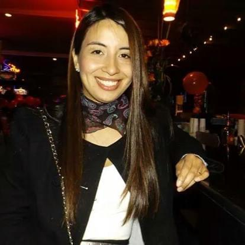

¡Hola! Soy Claudia
Diseñadora de Experiencia de Usuario

Datos Personales
- Nombre : Claudia Heredia Díaz
- Correo : clauherediaz@gmail.com
- Perfil in :
Claudia-Heredia
- Nacionalidad : Chilena
Perfil profesional
Creativa, versátil, con interés en la tecnología, diseño y desarrollo de software, gracias a mi formación profesional cuento con conocimientos de metodologías ágiles, diseño UX/ UI y desarrollo de aplicaciones Front end. Conocimientos de HTML5, CSS3
y JavaScript, frameworks como Vtex, bootstrap, manejo de software de diseño y desarrollo web.
Formación
Universidad Católica de la Santísima Concepción 2015-2018 Ingeniería (E) Industrial - Titulado
Universidad Tecnológica INACAP 2007-2011 Diseño Gráfico Profesional - Titulado Cursos
Capacitaciones
Talento Digital para Chile 2022 Diseño UX/UI
Comisión Chilena de Energía Nuclear (CCHEN) 2020 - CUBEPRO Curso de protección radiológica aprobado
Laboratoria L.A. Bootcamp de programación 2019
Experiencia
Diseñadora UX para Telefonica Hispam.
Ecomsur, 2021 Diseñadora Front end en área de implementación de proyectos en Ecomsur, empresa Fullcommerce y Omnicanalidad. www.ecomsur.com
CCHEN Comisión Chilena de Energía Nuclear, 2020 Diseñadora
& Web Master, encargada del proyecto de diseño y el desarrollo del sitio web del Centro Nacional de Datos de las estaciones chilenas de monitoreo del TPCE (Tratado de Prohibición de Ensayos Nucleares) ubicado en el Centro de Estudios Nucleares
la Reina. www.ndc-ctbt.cl www.ctbto.org CCHEN Comisión Chilena de Energía Nuclear, 2019
Asistente del Centro Nacional de Datos de las estaciones chilenas de monitoreo del TPCE (Tratado de Prohibición de Ensayos Nucleares) ubicado en el
Centro de Estudios Nucleares la Reina.
www.cchen.cl www.ctbto.org
CRISA Compañía Regional de Infraestructura, 2018 Encargada del área de diseño y difusión del proyecto terminal de regasificación GNL Talcahuano. www.gnlt.cl
CRECIC, organismo técnico de capacitación, Concepción. 2017. Diseñadora encargada de ejecución de proyectos de difusión interna y externa y el diseño UI del sitio web. www.crecic.cl
CADESEM, organismo técnico de capacitación, Concepción.
2014-2017. Encargada de marketing y ejecución de proyectos de branding e identidad corporativa para Cadesem, EST San Cristobal y otras empresas del holding. www.cadesem.cl